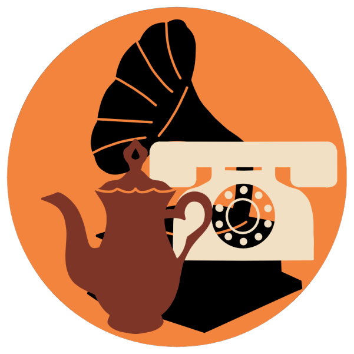
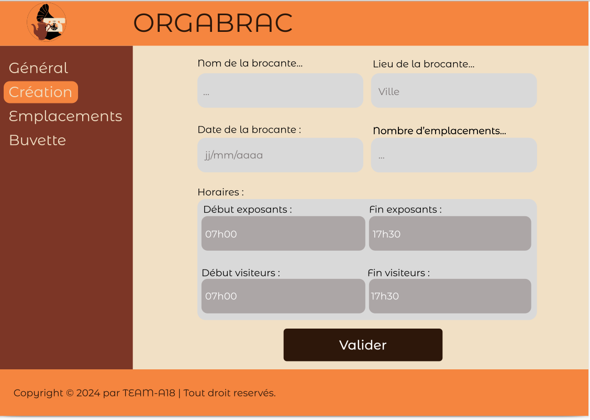

S2 : Developpement d'une application d'aide a l'organisation d'événement en JAVA

L’objectif de ce projet était de réaliser une application lourde pour aider un organisateur d'événement
en JAVA, JavaFX et FXML en équipe de 6. Nous devions choisir le type d'événement puis faire la conception
puis réaliser le code.
Travail de Groupe
Nous avons tout d'abourd choisit notre type d'événement : les vides greniers. Nous avons trouvé un nom, un logo, les couleur.
Par la suite nous avons en parralèlle rédiger le dossier de gestion de projet (avec en particulier les contraintes, les risques
induits et la mitigation) et le dossier de conception UML (avec les diagramme des cas d'utilisation, leurs priorisation).
Travail Personnel
Je me suis occupée de la partie communication. de la distribution des tache dans la premiere partie de
conceptionJ'ai fait quelque fonctions comme par exemple le fait de bloquer et d'entourer en rouge les
champs obligatoire dans le formulaire.

Ce projet m’a permis d’apprendre a faire du code dans une équipe, comprendre le code des autres,
distribuer les tâches,
S2 : Developpement d'une application d'aide a l'organisation d'événement en JAVA
L’objectif de ce projet était de réaliser une application lourde pour aider un organisateur d'événement
en JAVA, JavaFX et FXML en équipe de 6. Nous devions choisir le type d'événement puis faire la conception
puis réaliser le code.
Travail de Groupe
Nous avons tout d'abourd choisit notre type d'événement : les vides greniers. Nous avons trouvé un nom, un logo, les couleur.
Par la suite nous avons en parralèlle rédiger le dossier de gestion de projet (avec en particulier les contraintes, les risques
induits et la mitigation) et le dossier de conception UML (avec les diagramme des cas d'utilisation, leurs priorisation).
Travail Personnel
Je me suis occupée de la partie communication. de la distribution des tache dans la premiere partie de
conceptionJ'ai fait quelque fonctions comme par exemple le fait de bloquer et d'entourer en rouge les
champs obligatoire dans le formulaire.
Ce projet m’a permis d’apprendre a faire du code dans une équipe, comprendre le code des autres,
distribuer les tâches,
S1 : Classement automatique de dépêches
L’objectif de ce projet était de trier automatiquement des dépêches de presse dans différentes catégories comme par exemple sport, culture, politique… avec le plus haut pourcentage de réussite possible en optimisant au mieux notre programme.
Travail de Groupe
Nous avons réalisé ce projet en binôme en deux phases. Dans un premier temps en s’aidant de lexiques crées manuellement par catégorie, en associant des mots clés à un poids (entre 1 et 3). Les dépêches sont ensuite associées à une catégorie en calculant leurs poids pour chaque catégorie.
Dans un second temps, les lexiques sont crées automatiquement en calculant la récurrence de mot d’autres dépêches qui ont une catégorie donnée. Pour ces deux phases, il fallait calculer le taux de réussite et optimiser les lexiques crées manuellement et optimiser le programme pour que ce taux soit le plus haut possible et faire un rapport détaillé en anglais pour expliquer notre code.
Travail Personnel
Je me suis occupée de réaliser tous le code et de l’optimiser au mieux et de le détailler à l’aide de nombreux commentaires.
Ce projet m’a permis de travailler avec une personne d'un niveau plus faible que le mien et donc d’expliquer mon code pour que mon camarade comprenne et puisse ensuite l’expliquer à son tour.